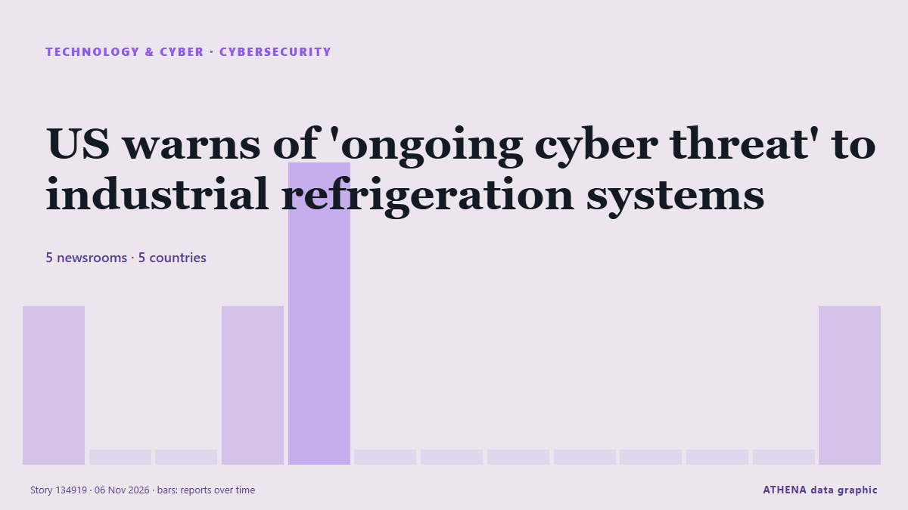

Cybersicherheit
GesponsertPräsentiert von  Cybernetics and Artificial Intelligence Lab Welcome to the Cybernetics and Artificial Intelligence Laboratory, established at the Department of Business Administration of the National and Kapodistrian University of Athens. The lab is headed by Professor Dimitrios Thomakos. The lab aims to do research that can be published in top venues. Our research uses tools and methods of Artificial Intelligence, and lies in the following areas: - Forecasting - Decision making - Cyber security - Finance We are always looking forward to collaborating with exceptional students!
Cybernetics and Artificial Intelligence Lab Welcome to the Cybernetics and Artificial Intelligence Laboratory, established at the Department of Business Administration of the National and Kapodistrian University of Athens. The lab is headed by Professor Dimitrios Thomakos. The lab aims to do research that can be published in top venues. Our research uses tools and methods of Artificial Intelligence, and lies in the following areas: - Forecasting - Decision making - Cyber security - Finance We are always looking forward to collaborating with exceptional students!
| 24. Okt. | 0 |
|---|---|
| 25. Okt. | 0 |
| 26. Okt. | 0 |
| 27. Okt. | 0 |
| 28. Okt. | 0 |
| 29. Okt. | 1 |
| 30. Okt. | 0 |
| 31. Okt. | 2 |
| 1. Nov. | 1 |
| 2. Nov. | 7 |
| 3. Nov. | 6 |
| 4. Nov. | 5 |
| 5. Nov. | 2 |
| 6. Nov. | 0 |
Schlagzeilen werden auf Englisch angezeigt, wie veröffentlicht.

US warns of 'ongoing cyber threat' to industrial refrigeration systems
Urges industrial refrigeration control system operators to apply software updates, pull devices off public internet. von Express Tribune
Chainalysis discloses data breach from "offensive agentic techniques"
Blockchain analytics firm Chainalysis disclosed a data breach after attackers used "offensive agentic techniques" to access internal systems and tools, exposing customer names, email addresses, user… von BleepingComputer
Missed calls puzzle Telstra customers
Telstra says a hack or cyber breach is not to blame for customers receiving mystery missed calls. von Sydney Morning Herald
British adventurer Karl Bushby completes 28-year walk around the world
On November 2, Karl Bushby finished his 28-year walk back to his English hometown of Hull. von NBC News (World)
Cyberattack hits French blood banks
Three blood banks have detected and reversed a potentially destructive temperature spike in their cold rooms, following a cyberattack that targeted a refrigeration equipment provider of the French… von Help Net Security
Google dismantles botnet secretly running on 1.3 million Android TV boxes
Google has cut ties with the company behind the botnet campaign. von Ars Technica
UK Must Expect AI-Powered Attack on Critical Infrastructure Within Two Years: Report
Britain should be prepared for an AI-powered cyberattack on its critical national infrastructure in the next two years, the UK’s National Cyber Security Centre said on Tuesday, adding that China was… von Insurance Journal
Here's what to know about another cyberattack on European supermarket fridges
Experts say outdated technology and weak passwords are to blame. von PBS NewsHour
European supermarkets rush to patch vulnerabilities after region-wide fridge hack
EU cybersecurity agency says attacks underscore importance of European cooperation, rapid information-sharing. von Express Tribune
Armed forces monitoring daily cyber threats to protect national security
MELAKA: The armed forces are closely monitoring and preventing cyber threats to ensure they are dealt with effectively, safeguarding the country's security and sovereignty. von New Straits Times
Supermarket freezers in several European countries hit by apparent cyberattacks
Supermarkets in Sweden, Belgium, Luxembourg, Ireland and Estonia were hit Monday by problems with freezers and fridges that apparently were caused by cyberattacks, forcing some to dispose of ruined… von The Canadian Press (via CityNews)
Europe on alert after supermarket freezers hit by cyber-attacks in 10 countries
Supermarkets have reported problems from Estonia and Sweden to Portugal and Italy and many retainers have been forced to discard food. von BBC News
Fridge cyberattack hits supermarkets across Europe
Grocery stores in at least five European countries saw temperatures in their cold cases soar on Monday, with several confirming they had been hit by a cyberattack similar to one three weeks ago in… von Dawn
Greek butcher shop reports cyberattack targeting refrigeration systems
Hackers allegedly gain access to refrigeration control system, set the temperature to 302F. von Anadolu Agency (English)
Suspected cyberattack sends Swedish supermarket freezers to 50C
The temperature of freezers at several Swedish grocery stores rose sharply overnight, operators ICA and Coop said on Monday, with at least one store blaming the incident on a cyberattack. von Cyprus Mail
'Noticeable' spike in Dunedin car thieves targeting Subaru vehicles
Police say there is little or no sign of forced entry in many cases, and offenders are instead exploiting known vulnerabilities in some vehicle models. von RNZ National
Hackers hit Ukraine, Russia's emergency apps, send fake nuclear, chemical attack alerts
All-clear messages were sent shortly afterward for each alert, and Ukraine's Ministry for Digital Transformation said the app had been temporarily suspended. von The Jerusalem Post
UK faces ‘unprecedented rise’ in cyberattacks in coming months, warns cyber chief
"[V]ulnerabilities that have been tolerated for far too long can now be discovered and exploited at a scale that was once unimaginable," the NCSC's chief will warn in releasing the agency's annual… von The Record (Recorded Future News)
Russia-Aligned Gorbag Hackers Exploit WinRAR Flaw to Deploy Data-Stealing Malware
A Russia-aligned threat actor known as Gorbag has been observed using simple information stealer malware in attacks targeting Ukrainian organizations. von The Hacker News